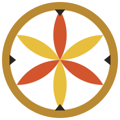

OASP Vorbereiten · P1 a01ee16 · 2026-11-17
.oasp.zip weitergeben. Hier ist die einzige Eingabe der Projektdaten; Capture übernimmt sie. Alles bleibt auf diesem Gerät; der Bescheid wird nur hier gelesen und nicht gespeichert.Projekte auf diesem Gerät
1 Projekt
Für eine BDA-Maßnahme zuerst den Bescheid auslesen: Die Angaben werden lokal erkannt und unten zur Bestätigung gezeigt. Ohne PDF lassen sie sich auch von Hand eintragen.
2 Maßnahme laut Bescheid
Zuerst die wichtigsten Angaben bestätigen. Übernommen wird nur, was angehakt ist; Unsicheres und Fehlendes bleibt offen.
Weitere Angaben aus dem Bescheid
3 Vermessung festlegen
Gilt für alle Koordinaten des Projekts, für Capture und für die Abgabe. OASP schlägt nur vor; festgelegt ist ein Wert erst, wenn er hier gewählt oder ein Vorschlag übernommen wurde.
4 Beantragte Maßnahmenfläche
Die Fläche des Antrags – ungefähr und großzügig. Sie ist nicht die abzugebende Maßnahmenfläche: diese entsteht am Ende aus der eingemessenen Grenze. Einlesen aus einem Shapefile (ZIP) – nach Möglichkeit im Projektbezug; eine Datei in einem anderen MGI-System (z. B. Lambert) wird mit Vermerk in den Projektbezug gebracht – oder als Eckpunktliste im Projektbezug; danach ausdrücklich bestätigen.
5 Festpunkte
Jede Übernahme ist eine eigene Bestimmung mit Herkunft und Bezug. Gibt es die Kennung schon, kommt eine weitere Bestimmung dazu – welche gilt, entscheidest du. Übernehmen heißt bereitstellen: ob ein Punkt vor Ort vorhanden und geeignet ist, zeigt sich beim Messen in Capture.
BEV-Festpunkte in der Nähe
Übernommen wird eine konkrete Stabilisierung (z. B. TP 146-204 · A1) mit ihren MGI-Koordinaten. Punkte in einem anderen Meridianstreifen als das Projekt werden nicht übernommen – umgerechnet wird nicht.
Ohne Netz: BEV-Stichtagsdaten
Die amtlichen Festpunktlisten (MGI) direkt vom BEV einmal laden; sie bleiben mit ihrem Stichtag auf diesem Gerät. Gesucht wird nach dem Abstand zur ganzen Maßnahmenfläche, über KG-Grenzen hinweg.
Eigene Festpunkte importieren
CSV/TXT, DXF, JSON/GeoJSON oder Shapefile als ZIP (Punkte). Vor der Übernahme werden Kennung, Koordinaten, Höhe, Bezug und Herkunft gezeigt; die Spalten lassen sich zuordnen. Leere Höhen bleiben leer.
Übernommene Festpunkte
6 Referenzdateien
Altpläne, GIS-Daten, Raster – werden unverändert ins Paket gelegt (Ordner referenz/), mit Prüfsumme und Quellbezug. Punktskizzen übernommener BEV-Festpunkte liegen ebenfalls hier.
Lageskizze
Nur zur Kontrolle, ohne Hintergrundkarte; Nord oben. Fläche: beantragte Maßnahmenfläche · ▲ übernommene Festpunkte · △ BEV-Treffer der letzten Suche (antippen für Details).